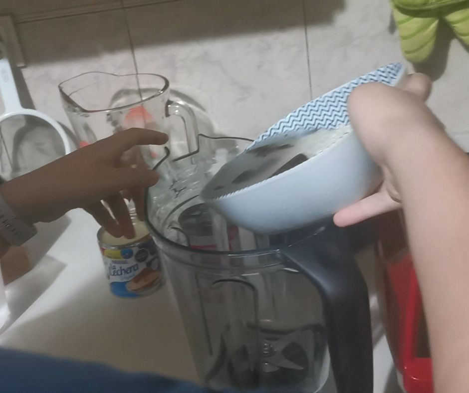
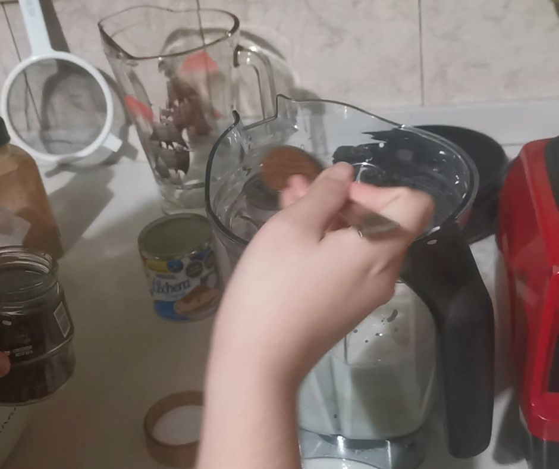
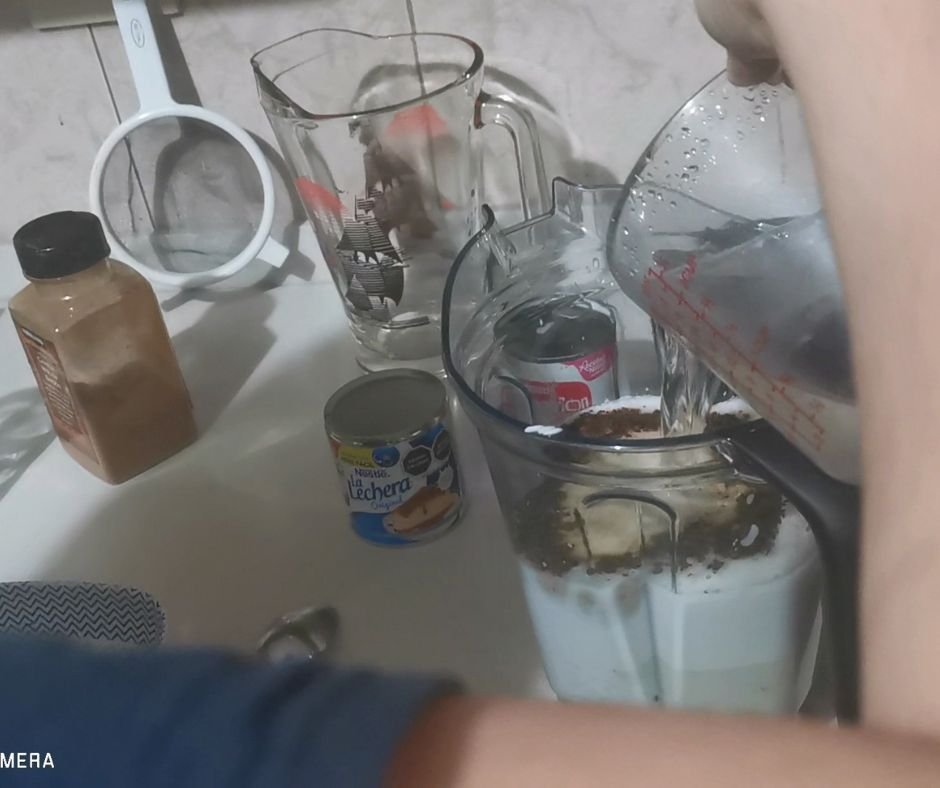
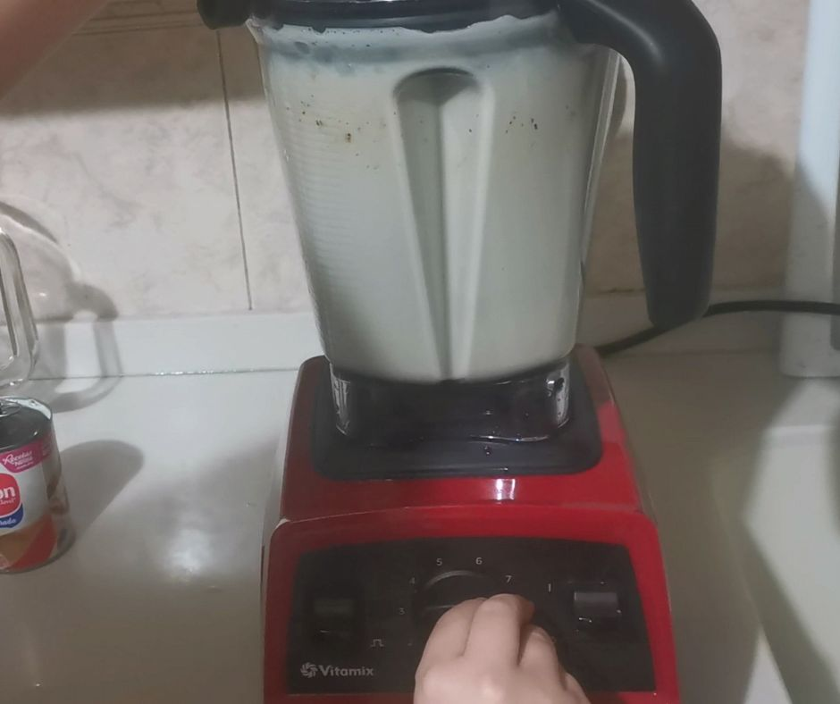
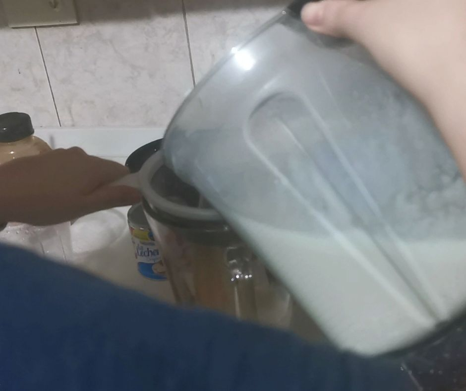
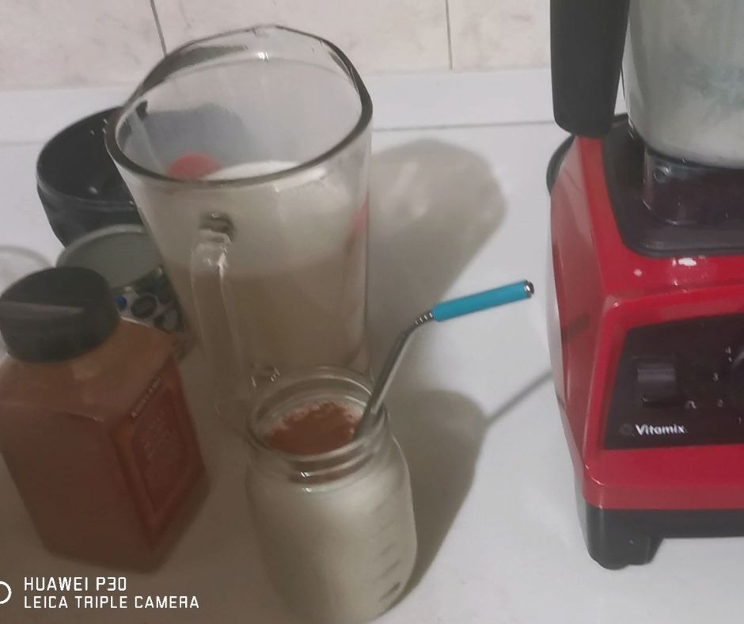

Paso 1

En un licuadora poner el arroz blanco previamente remojado junto con una ramita de canela
Paso 2

Añadir una lata de leche evaporada
Paso 3

Añadir una lata de leche condensada
Paso 4

Añadir 2 cucharadas de café
Paso 5

Añadir 3 tazas de agua
Paso 6

Licuar hasta que se mezclen bien los ingredientes
Paso 7

Pasar la bebida a una jarra por medio de un colador
Paso 8

Servir en un vaso y decorar con canela en polvo(opcional)